Murais & Painéis
Grafite autoral wild-style para muros, fachadas e espaços culturais.
Ceilândia · Distrito Federal
Grafite · Hip Hop · Brasília
Da Ceilândia para os muros do DF. Três décadas transformando o espaço público em arquivo vivo.
Galeria
Registros do traço de Satão em muros, vagões e encontros. A mesma trajetória iniciada com a OS-3S e o DF Zulu, nos anos 1990.
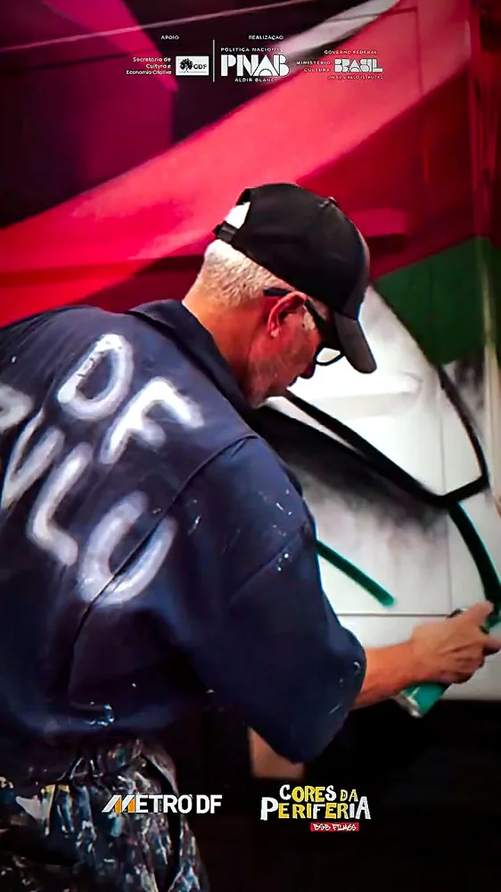
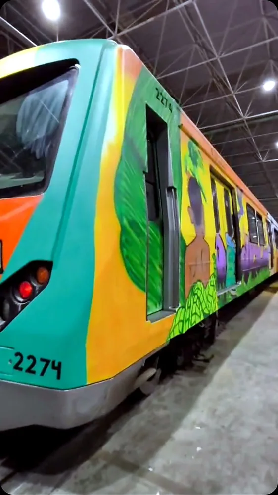
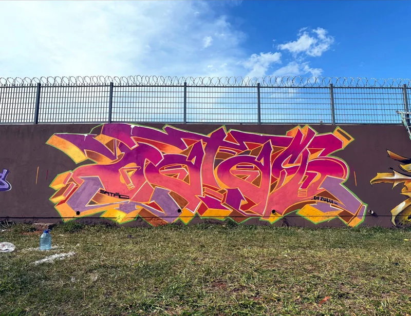
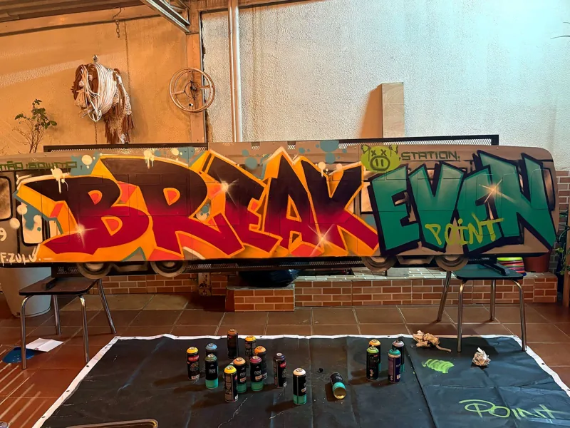
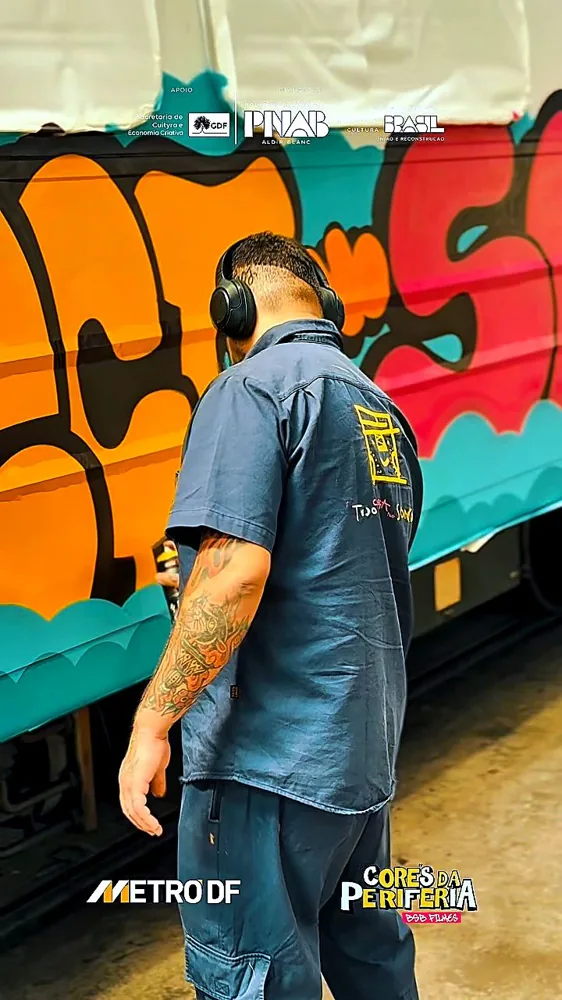
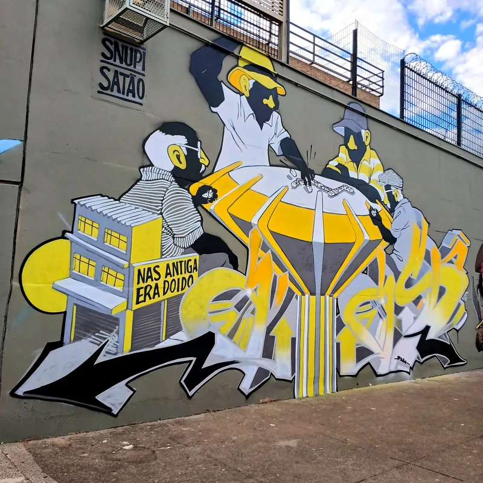
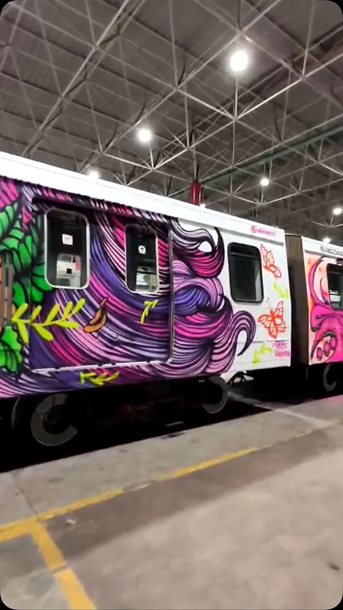
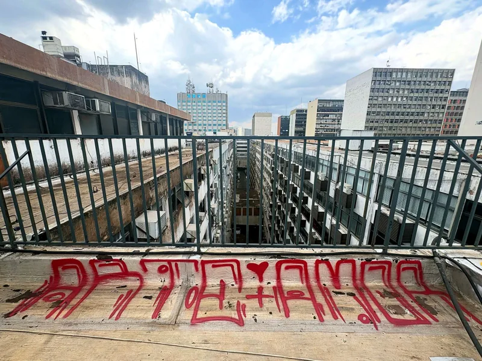
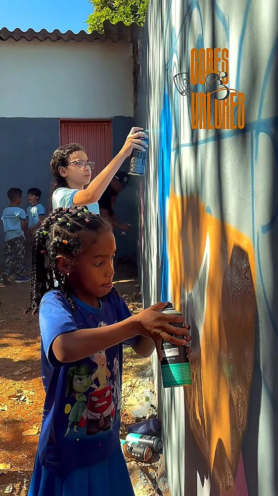
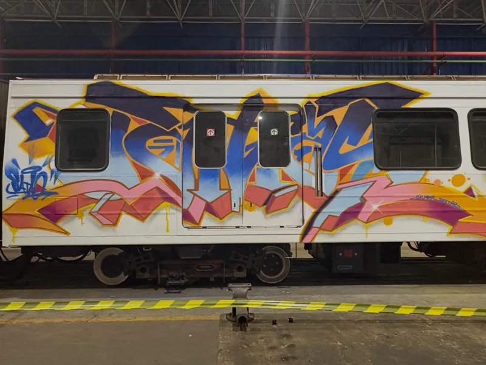
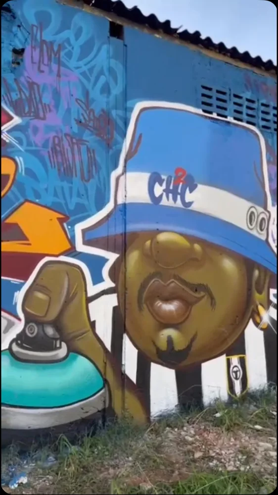
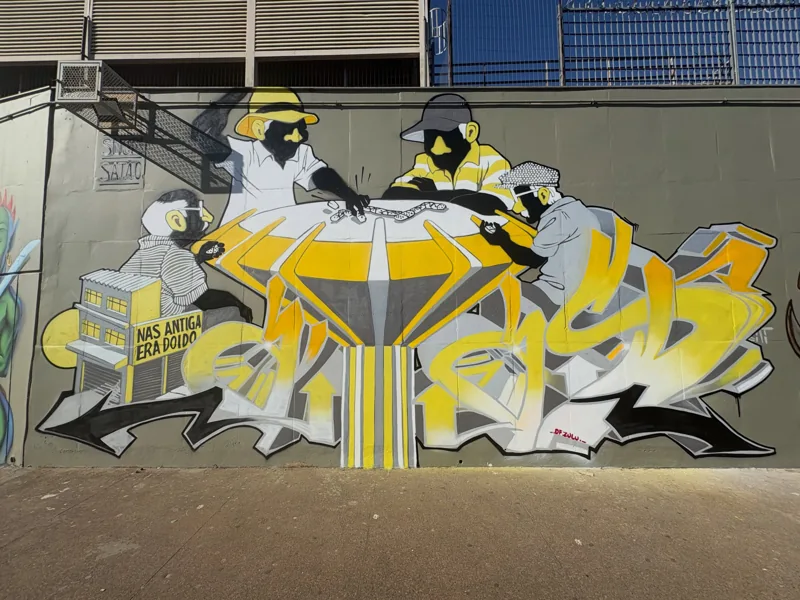
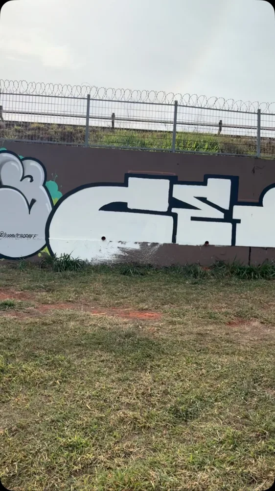
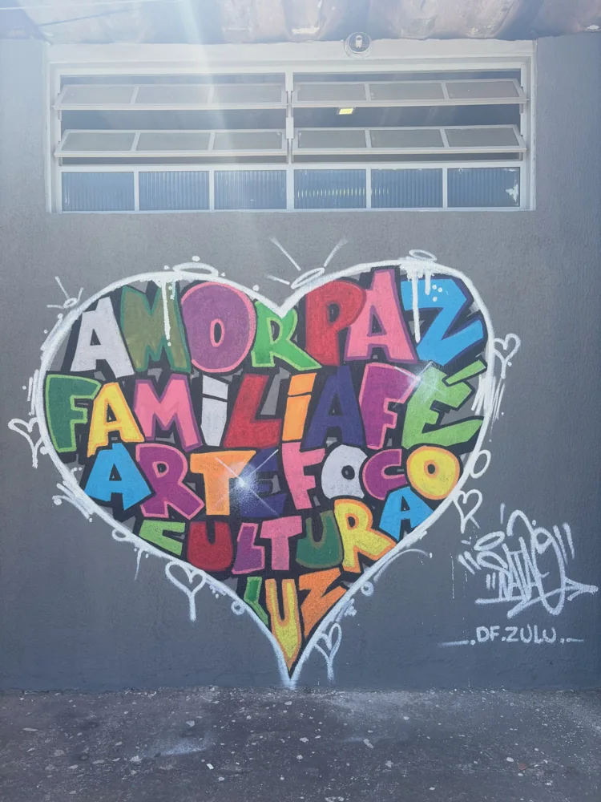

Sobre o artista
Da Ceilândia para os muros do mundo. Três décadas de rua, tinta e resistência viraram ofício, e o ofício virou voz.
Para Satão, o traço é identidade antes de ser ofício: um jeito de dizer de onde vem e de deixar a Ceilândia visível na cidade inteira.
Mais que assinar paredes, ele assina presença: na oficina, na palestra, na produção cultural que segue movimentando o Distrito Federal.
TRAJETÓRIA
ANOS 1990 - AGORANascido e criado na Ceilândia, Gilmar Satão é grafiteiro, jornalista, educador e produtor, com décadas de trajetória na cultura Hip Hop de Brasília.
Começou ainda garoto, aos 12 anos, riscando a cidade. O encontro com o Hip Hop abriu outra linguagem: o grafite como presença, criação e diálogo com a quebrada.
Em 1993, ao lado de Sowtto e Supla, formou a OS-3S, a primeira crew de grafite do Distrito Federal. O traço wild-style virou referência na memória visual de Brasília e levou seu nome de vários estados até a França.
Linha do tempo
Aos 12 anos, ainda garoto, Satão começa a riscar a cidade. O encontro com o Hip Hop logo abre outra linguagem.
Ao lado de Sowtto e Supla, forma a OS-3S, a primeira crew de grafite do Distrito Federal.
O estilo autoral vira referência na cena Hip Hop e na memória visual de Brasília.
O traço de Satão leva seu nome de vários estados brasileiros até a França.
O Sol Nascente recebe um encontro que celebra três décadas de trajetória e reúne artistas de diferentes estados.
O Jornal de Brasília registra a cultura urbana que ocupa a cidade além do quadradinho.
Murais, oficinas, palestras e produção cultural seguem movimentando o Distrito Federal.
O QUE EU FAÇO
Grafite é presença. Levo o traço e a conversa para muros, escolas e espaços culturais.
Grafite autoral wild-style para muros, fachadas e espaços culturais.
Vivências e formação com a molecada, escolas e a comunidade.
Conversas sobre Hip Hop, memória urbana e cultura de rua.
Encontros, ações e eventos que movimentam a cena do DF.
Oficinas & Educação
Vivências práticas que levam o traço, a técnica e a história do Hip Hop para escolas, coletivos e espaços culturais.
Crianças, adolescentes e adultos, em escolas públicas e privadas, ONGs, projetos sociais e espaços culturais.
Fundamentos do grafite e do wild-style, cores e valores, letras e composição, além da história do Hip Hop e da cultura de rua.
Encontros presenciais, com prática de pintura em muro ou papel, adaptados à faixa etária e ao tempo disponível do grupo.
Quer levar uma oficina, palestra ou mural para a sua escola, instituição ou evento?
Território
Da periferia para o centro, dos muros aos vagões: o traço de Satão ocupa o mapa da cidade e já passou por vários estados brasileiros e pela França.
Do quadradinho de Ceilândia até a França: o alcance de três décadas de traço.
Programação
Murais, oficinas e encontros novos entram aqui assim que confirmados. Para não perder nenhum, acompanhe de perto.
PRÓXIMA AÇÃO
Quer receber a programação de murais, oficinas e encontros? Acompanhe no Instagram @gilmar_satao.
Receber avisos no WhatsAppENCONTRO
Sol Nascente recebeu um encontro que celebrou três décadas de trajetória e reuniu artistas de diferentes estados.
Comunidade
Encontrou um grafite do Satão pela cidade? Compartilhe a foto. Toda imagem passa por moderação antes de entrar na galeria da comunidade.
Carregando fotos…
Carregando avaliações…
Na mídia & parceiros
“Cultura urbana: arte que ocupa além do quadradinho” Cobertura sobre a cena de grafite e Hip Hop do DF.
Encontro no Sol Nascente que celebrou três décadas de trajetória, reunindo artistas de diferentes estados.
Perfil que reúne registros da trajetória e da atuação cultural do artista.
No Instagram


A CIDADE É NOSSA TELA.